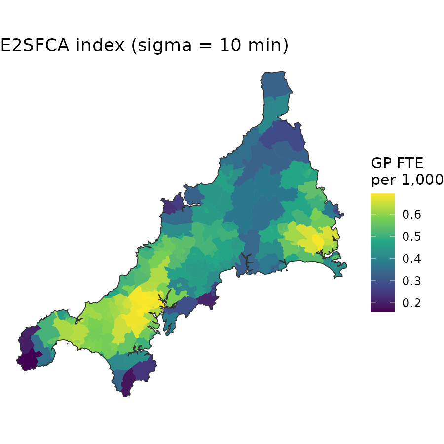
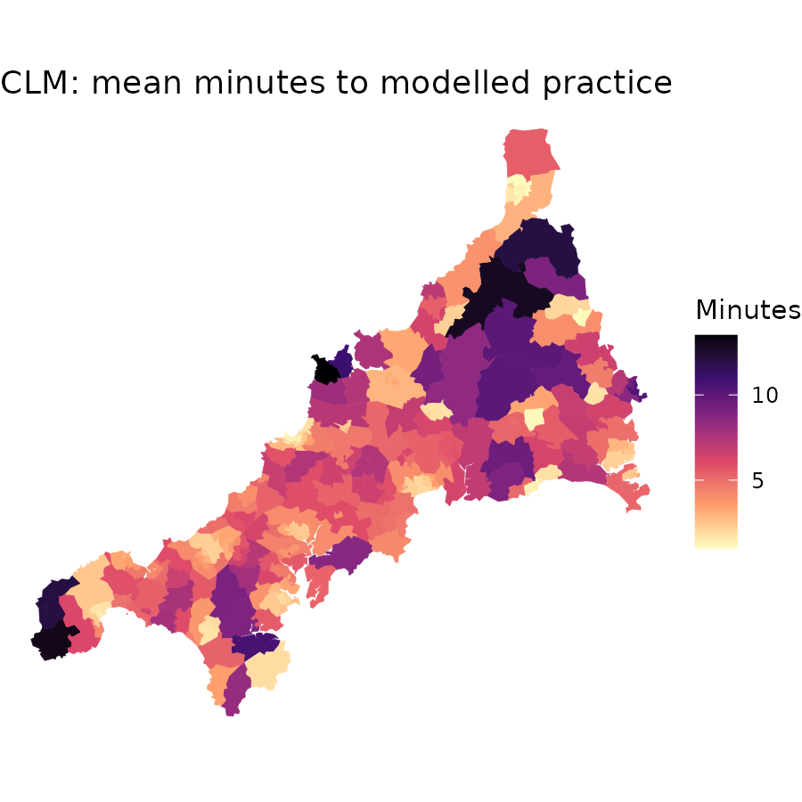

This guide uses the bundled Cornwall GP data, described in The Cornwall GP example data.
Choose a model by the quantity you need and the observations that can support it. spax retains its public floating catchment area (FCA) workflow and adds an experimental corrected static conditional-logit allocation workflow with an explicit outside option. Existing FCA calls remain valid; they do not need to be rewritten as allocation fits.
| Question | Starting point | What the output means |
|---|---|---|
| How is weighted supply distributed relative to weighted demand? |
spax_2sfca(), spax_e2sfca(),
spax_m2sfca(), spax_3sfca(),
spax_huff2sfca()
|
A model-specific supply-per-demand accessibility index |
| How are request opportunities allocated among facilities and an outside option? |
prep_data() and spec_clm()
with spax(), or the steps prepare_allocation()
then clm_allocation()
|
Choice probabilities and expected loads under a declared model |
| Which parameters fit observed utilization or flows? |
spax() with obs_flows() or
obs_totals(), or the step
fit_allocation()
|
A calibrated mean model plus optimization diagnostics |
| What changes under a supply scenario at the same parameters? | Reprepare and evaluate_allocation()
|
A model-based contrast, not an estimated causal effect |
| What can be predicted at additional locations? | predict_allocation() |
Requested outputs with probability, demand and capacity validity flags |
| Are facility-count bootstrap intervals available? |
bootstrap_allocation() after an eligible
fit and observation declaration |
Conditional pointwise intervals when the supported procedure’s gates pass |
An FCA index is not a choice probability. A fitted model is not automatically identified or empirically validated. A regional interval is not a cellwise map interval. These distinctions remain even when both workflows use the same travel data.
One Cornwall system, two calculations
Both calculations below use the same inputs for mainland Cornwall: 336 small areas (LSOAs) and 54 GP practices. Demand is the registered residents of each area, supply is GP full-time equivalents (FTE) excluding GPs in training, and travel is the small area × practice matrix of minutes.
# Mainland small areas and practices, as plain tables
areas <- cornwall_lsoa |>
filter(!scilly) |>
st_drop_geometry()
gp <- cornwall_gp |>
filter(!scilly) |>
st_drop_geometry()
# Demand per area, supply per practice and the area x practice travel
# matrix, all named by ID
D <- setNames(areas$registered, areas$lsoa)
S <- setNames(gp$gp_fte_extg, gp$practice)
T <- cornwall_travel[areas$lsoa, gp$practice]
c(
areas = length(D),
practices = length(S),
missing_travel = sum(is.na(T))
) areas practices missing_travel
336 54 0 An FCA index
The public FCA functions take a demand raster and one travel layer per facility. To give the FCA exactly the same demand and travel as the allocation model, place the 336 areas in a one-row raster. The raster is only a container without geographic meaning; values are mapped back to the areas afterwards. The Gaussian scale of 10 minutes is a choice for this guide, not an estimate.
# A one-row raster with one cell per area, in the order of D
template <- rast(
nrows = 1,
ncols = length(D),
xmin = 0,
xmax = length(D),
ymin = 0,
ymax = 1,
crs = "EPSG:27700"
)
demand_raster <- setValues(template, unname(D))
# One travel layer per practice, named by practice code
travel_raster <- rast(template, nlyrs = ncol(T))
values(travel_raster) <- T
names(travel_raster) <- colnames(T)
fca <- spax_e2sfca(
demand = demand_raster,
supply = gp,
distance = travel_raster,
decay_params = list(method = "gaussian", sigma = 10),
id_col = "practice",
supply_cols = c("gp_fte_extg", "gp_fte") # two separate indices
)
# Back to one row per area, in GP FTE per 1,000
fca_index <- 1000 * values(fca$accessibility, dataframe = TRUE)
summary(fca_index) gp_fte_extg gp_fte
Min. :0.1609 Min. :0.2410
1st Qu.:0.4535 1st Qu.:0.5652
Median :0.5094 Median :0.6381
Mean :0.5131 Mean :0.6371
3rd Qu.:0.5988 3rd Qu.:0.7475
Max. :0.6915 Max. :0.8890 Each supply column gives its own index, in GP FTE per 1,000
distance-weighted registered residents: gp_fte_extg
excludes GPs in training and gp_fte includes them. The two
are separate indicators computed side by side; the FCA does not combine
them.
A static CLM fitted to registrations
The static CLM gives practice j an attraction S_j times its Gaussian decay weight, and divides by the sum of attractions plus an outside weight v0. Each area therefore has a probability for every practice plus an outside probability, and these sum to 1. Here the outside option stands for registration with a practice outside mainland Cornwall (for example in Devon or on the Isles of Scilly); it is not unmet need. The model uses one supply vector.
The Huff model is this model without the outside option, and
huff_allocation() declares it, with power decay and a
fitted attractiveness exponent by default. This guide uses
clm_allocation(fit_v0 = TRUE) because some registrations go
to practices outside mainland Cornwall.
Fitting needs a declared target. Here it is the observed small area ×
practice registrations, a stock of who is registered where rather than a
count of visits, fitted with a Poisson loss from three explicit starts.
The guide uses the step functions;
spax(prep_data(D, S, T), spec_clm(), observed = obs_flows(observed))
fits the same model in one call, with starts found in the data (see the
allocation workflow).
# Observed registrations as an area x practice matrix (zero if none)
observed <- matrix(0, nrow(T), ncol(T), dimnames = dimnames(T))
keep <- cornwall_flows$lsoa %in% rownames(T) &
cornwall_flows$practice %in% colnames(T)
observed[cbind(cornwall_flows$lsoa[keep], cornwall_flows$practice[keep])] <-
cornwall_flows$patients[keep]
# Check and align the inputs once; unit labels are recorded, not converted
inputs <- prepare_allocation(
demand = D,
supply = S,
distance = T,
metadata = list(
demand_units = "registered residents",
demand_period = "July 2026",
supply_units = "GP FTE excluding GPs in training",
supply_period = "June 2026",
travel_units = "minutes"
)
)
# Gaussian travel decay with a fitted outside weight v0
model <- clm_allocation(inputs, family = "gaussian", fit_v0 = TRUE)
# Three starting points, from a short to a long travel scale
starts <- rbind(
near = c(sigma = 3, v0 = 0.05),
middle = c(sigma = 6, v0 = 0.01),
far = c(sigma = 12, v0 = 0.002)
)
# Fit the area x practice flows with a Poisson loss
fit <- fit_allocation(
model = model,
observed = observed,
starts = starts,
lower = c(sigma = 0.5, v0 = 1e-6),
upper = c(sigma = 60, v0 = 10),
output = "flow",
loss = "poisson",
gradient = TRUE,
control = list(maxit = 300, factr = 10, pgtol = 1e-8)
)
stopifnot(identical(fit$status, "selected"))
coef(fit) sigma v0
4.59099725 0.02733455 The fitted Gaussian scale is about 4.6 minutes, much shorter than the
10 minutes chosen for the FCA: registration is very local. Inspect
summary(fit) for all starts, failures and boundaries;
agreement among starts does not establish identification or a global
optimum.
What one area sees
Take the area with the largest total FCA weight, one with many practices within a short drive. The table lists its four nearest practices.
# Choice probabilities and outside shares for every area
prediction <- predict_allocation(
source = fit,
distance = T,
demand = D,
outputs = c("allocation", "outside_share")
)
P <- prediction$outputs$allocation
# The area with the largest total FCA weight, and its four nearest practices
W <- exp(-T^2 / (2 * 10^2)) # the FCA's Gaussian weights
i <- which.max(rowSums(W))
nearest <- order(T[i, ])[1:4]
data.frame(
practice = gp$name[nearest],
minutes = T[i, nearest],
fca_weight = round(W[i, nearest], 2),
clm_probability = round(P[i, nearest], 3),
observed_share = round(observed[i, nearest] / D[i], 3),
row.names = NULL
) practice minutes fca_weight clm_probability observed_share
1 CARNON DOWNS SURGERY 2 0.98 0.216 0.573
2 PENRYN SURGERY 5 0.88 0.196 0.089
3 CHACEWATER HEALTH CENTRE 6 0.84 0.071 0.171
4 LANDER MEDICAL PRACTICE 7 0.78 0.143 0.028
# Totals over all practices for this area
round(
c(
fca_weights = sum(W[i, ]),
clm_inside = sum(P[i, ]),
clm_outside = prediction$outputs$outside_share[[i]]
),
4
)fca_weights clm_inside clm_outside
10.3451 0.9988 0.0012 The FCA weights are separate distance discounts, one per practice. They do not compete with each other and they sum to far more than 1 here. The CLM probabilities do compete: a nearby practice with more GP FTE draws residents away from the others, and the probabilities over all practices plus the outside option sum to 1. Lander Medical Practice, 7 minutes away with about 10 GP FTE, gets a higher probability than Chacewater Health Centre, 6 minutes away with under 4. Because they are probabilities, they can be set beside the observed shares of registered residents, which here differ markedly: the model has no term for anything other than travel time and GP FTE.
Side by side
The FCA returns one index per area for each supply column. The CLM returns a distribution over practices for each area, from which other quantities follow: expected flows (demand times probability), practice loads (their column sums) and, for example, the mean travel time to the practice an area’s residents are modelled to register with.
# Add the FCA index and the CLM's probability-weighted mean minutes
areas <- areas |>
mutate(
fca = fca_index$gp_fte_extg,
clm_minutes = rowSums(P * T) / rowSums(P)
)
# Join to the small-area polygons for mapping
mapped <- cornwall_lsoa |>
select(lsoa) |>
inner_join(areas, by = "lsoa")
ggplot(mapped) +
geom_sf(aes(fill = fca, colour = fca), linewidth = 0.1) +
scale_fill_viridis_c(
name = "GP FTE\nper 1,000",
aesthetics = c("fill", "colour")
) +
labs(title = "E2SFCA index (sigma = 10 min)") +
theme_void()
ggplot(mapped) +
geom_sf(aes(fill = clm_minutes, colour = clm_minutes), linewidth = 0.1) +
scale_fill_viridis_c(
name = "Minutes",
option = "magma",
direction = -1,
aesthetics = c("fill", "colour")
) +
labs(title = "CLM: mean minutes to modelled practice") +
theme_void()

The FCA map shows supply relative to distance-weighted demand. The CLM map shows how far residents are modelled to travel to their practice, longest in rural areas in the north-east and at the western tip. The fitted flows can be checked against the registrations; the FCA index has no corresponding observed quantity in these data.
# Correlations of modelled with observed: area mean minutes, practice totals
observed_minutes <- rowSums(observed * T) / rowSums(observed)
c(
mean_minutes = cor(areas$clm_minutes, observed_minutes),
practice_totals = cor(colSums(fitted(fit)), colSums(observed))
) mean_minutes practice_totals
0.9023549 0.9326925
# Share of residents registered outside mainland Cornwall, observed and
# modelled
outside <- c(
observed = 1 - sum(observed) / sum(D),
modelled = 1 - sum(fitted(fit)) / sum(D)
)
round(100 * outside, 2)observed modelled
0.91 0.54 Modelled and observed mean travel times correlate at 0.90 across areas, and modelled and observed practice totals at 0.93. One constant outside weight understates registration outside mainland Cornwall (the last line, in per cent of registered residents), which is concentrated in a few areas near the Devon border.
| E2SFCA index | Static CLM | |
|---|---|---|
| Per area | One supply-per-demand score per supply column | A probability for each practice plus the outside option |
| Supply | Each column is a separate indicator | One supply vector, which sets attraction |
| Distance decay | Chosen by the analyst (10 minutes here) | Fitted to the declared target (about 4.6 minutes here) |
| Outside option | None | Explicit weight v0, fitted here |
| Check against registrations | No observed counterpart | Fitted flows, practice totals and outside share |
The table and maps place distinct measures beside one another; they are not an equivalence check or a ranking of model quality. Neither output measures delivered care, and supply in the CLM affects attraction; it is not a hard capacity limit.
The allocation verbs
The six experimental verbs are prepare, declare, fit,
evaluate, predict and bootstrap. They are separate steps so
that a chosen fixed model can be evaluated without fitting, while an
eligible fit can be inspected without refitting. spax()
runs the first three in one call (or prepare, declare and evaluate, when
every parameter has a value); predict_allocation(),
bootstrap_allocation(), check_allocation() and
compare_allocations() accept its result. An outside option
does not automatically represent unmet need, and Poisson fitting does
not impose exact total matching.
This guide is not an uncertainty demonstration. The facility-case bootstrap needs a fit to whole facility counts, so the flow fit above is outside its scope. Continue to the full allocation workflow for prediction, a supply scenario and fresh-process saved-result inspection on the Cornwall data, and to Bootstrap intervals for a fitted allocation model for the bootstrap on a generated 80-origin, 40-facility network with all 399 attempts and at least 380 finite successful values per reported quantity. Observation declarations and original-fit eligibility remain required; a bootstrap is not available for every fit.
Carry these checks across workflows
Use stable facility IDs, declare counts versus densities and reference periods, and check travel geometry and units before computing. Keep zero demand, unknown demand and absent travel edges distinct. Legacy FCA reductions and experimental allocation preparation have different missing-data policies; sharing a file does not prove that their included support is the same.
For details, read Preparing your own data, The E2SFCA calculation step by step, Grid resolution and saved-result inspection. Data sources, dates and licences are listed in The Cornwall GP example data.